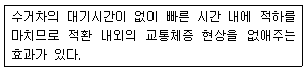
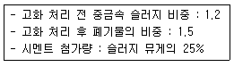
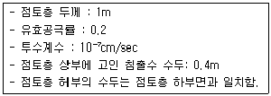
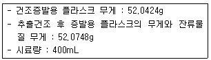
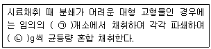
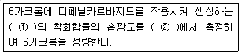
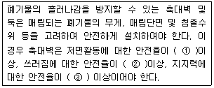
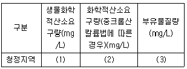

폐기물처리기사 (2009-05-10 기출문제)
1과목: 폐기물 개론
1. 어떤 도시에서 발생되는 쓰레기의 성분 중 비가연성이 약 72.7%(중량비)를 차지하는 것으로 조사되었다. 밀도 600kg/m3인 쓰레기 15m3가 있을 때 이 중 가연성 물질의 양(t)은? (단, 쓰레기는 가연성 + 비가연성)
- 2.⑤t
- 2.21t
- 2.46t
- 2.82t
(정답률: 알수없음)

2. 폐기물 발생량을 예측하는 방법 중 단지 시간과 그에 따른 쓰레기 발생량(또는 성상)간의 상관관계만을 고려하는 것은?
- 동적모사모델
- 발생량 관계 변수법
- 경향법
- 다중회귀모델
(정답률: 알수없음)
3. 70%의 함수율을 가진 쓰레기를 건조시킨 후 함수율이 20%가 되었다면 쓰레기 톤당 증발되는 수분의 양은? (단, 비중 1.0)
- 550kg
- 575kg
- 600kg
- 625kg
(정답률: 알수없음)
4. 고형분이 20%인 주방쓰레기 15톤을 함수율이 40% 되도록 건조 시켰다면 이 때 건조된 후의 주방쓰레기 무게는? (단, 비중은 1.0)
- 5톤
- 6톤
- 7톤
- 8톤
(정답률: 알수없음)
5. 폐기물파쇄기 중 전단파쇄기에 관한 설명으로 틀린 것은?
- 고정칼, 왕복 또는 회전칼과의 교합에 의하여 폐기물을 전단한다.
- 충격파쇄기에 비해 파쇄속도가 빠르다.
- 충격파쇄기에 비해 파쇄물의 크기를 고르게 할 수 있다.
- 충격파쇄기에 비해 이물질 혼입에 약하다.
(정답률: 알수없음)
6. 아래 내용은 어떠한 적환 시스템을 설명하는 것인가?

- 직접투하방식
- 저장투하방식
- 간접투하방식
- 압축투하방식
(정답률: 알수없음)
7. 쓰레기 배출량이 1.4kg/인ㆍ일 인 어느 도시의 가구수가 1,800이고, 가구당 평균 3.48인이 살고 있을 때, 10일 동안 배출하는 총 쓰레기의 양은?
- 약 64ton
- 약 76ton
- 약 88ton
- 약 93ton
(정답률: 알수없음)
8. 효율적이고 경제적인 수거노선을 결정할 때 유의할 사항으로 틀린 것은?
- 수거인원 및 차량형식이 같은 기존 시스템의 조건들을 서로 관련시킨다.
- 아주 많은 양의 쓰레기가 발생되는 발생원은 하루 중 가장 먼저 수거한다.
- U자형 회전을 이용하여 수거하고 가능한 시계방향으로 수거노선을 결정한다.
- 출발점은 차고와 가깝게 하고 수거된 마지막 콘테이너가 처분지의 가장 가까이에 위치하도록 배치한다.
(정답률: 알수없음)
9. 발생 쓰레기 밀도 500kg/m3, 차량적재용량 8m3, 압축비 2.0, 발생량 1.1kg/인ㆍ일, 차량적재함 이용율 85%, 차량수 3대, 수거 대상인구 15,000명, 수거인부 5명의 조건에서 차량을 동시 운행할 때, 쓰레기 수거는 일주일에 최소 몇 회 이상 하여야 하는가?
- 4
- 6
- 8
- 10
(정답률: 알수없음)
10. 쓰레기 관리 체계에서 비용이 가장 많이 드는 단계는?
- 저장
- 매립
- 퇴비화
- 수거
(정답률: 알수없음)
11. 어떤 도시의 수거 인구가 2009년 648,825명이며 이 도시의 쓰레기 배출량은 1.15kg/인ㆍ일이다. 수거인부는 308명이며 이들이 1일에 8시간을 작업한다면 MHT는?
- 2.3
- 3.3
- 4.3
- 5.4
(정답률: 알수없음)
12. 무게 10톤, 밀도 300kg/m3인 폐기물을 밀도 800kg/m3로 압축하였다면 압축비는?
- 2.16
- 2.43
- 2.67
- 2.92
(정답률: 알수없음)
13. 선별을 위해 투입한 폐기물의 량이 1t/h이고 회수량인 600kg/h(그 중 회수대상물질은 550kg)이며 제거량은 400kg(그 중 회수대상물질은 70kg/h)일 때 선별효율(Rietema 식 적용)은?
- 76%
- 79%
- 82%
- 87%
(정답률: 알수없음)
14. 쓰레기 압축기를 형태에 따라 구별한 것으로 틀린 것은?
- 소용돌이식 압축기
- 충격식 압축기
- 고정식 압축기
- 백(bag)압축기
(정답률: 알수없음)
15. 폐기물에 함유된 유용 성분을 분리해 내기 위해 1000kg의 폐기물을 처리하여 800kg과 200kg으로 분류하였다. 이들 각 폐기물에 함유된 유용성분의 함량을 조사하였더니 각각의 무게의 25%와 0.15%를 차지하고 있음을 알았다. 그러면 전체 폐기물에 함유되어 있는 유용성분의 함량은 약 몇 %(무게 기준)인가?
- 20%
- 23%
- 26%
- 29%
(정답률: 알수없음)
16. 어떤 폐기물의 압축 전 밀도가 0.5t/m3이다. 압축 후 밀도가 0.8t/m3로 변했다면 부피변화율은?
- 31.5%
- 34.5%
- 37.5%
- 39.5%
(정답률: 알수없음)
17. 다음 중 폐기물의 발생량 조사 방법이 아닌 것은?
- 직접 계근법
- 간접 계근법
- 적재 차량 계수 분석법
- 물질 수지법
(정답률: 알수없음)
18. 유해성 폐기물이라 판단할 수 있는 성질과 가장 거리가 먼 것은?
- 반응성
- 발화성
- 부식성
- 부패성
(정답률: 알수없음)
19. 슬러지를 처리하기 위하여 생슬러지를 분석한 결과 수분은 95%, 고형물 중 휘발성 고형물은 70%, 휘발성 고형물의 비중은 1:1, 무기성 고형물의 비중은 2.2였다. 생슬러지의 비중은? (단, 무기성 고형물+휘발성 고형물=총 고형물)
- 1.011
- 1.024
- 1.034
- 1.042
(정답률: 알수없음)
20. 돌ㆍ코르크 등의 불투명한 것과 유리 같은 투명한 것의 분리에 이용되는 선별방법은?
- floatation
- optical sorting
- inertial separation
- electrostatic separator
(정답률: 알수없음)
2과목: 폐기물 처리 기술
21. COD/TOC＜2.0, BOD＜0.1인 고령화된 매립지에서 발생되는 침출수 처리의 효율성이 불량한 공정은? (단, COD(mg/L)는 500보다 작다.)
- 이온교환수지
- 활성탄
- 화학적침전(석회투여)
- 역삼투공정
(정답률: 알수없음)
22. 다음 중 합성 차수막의 분류가 틀린 것은?
- PVC-Thermoplastics
- CR-Elastomer
- EDPM-Crystalline Thermoplastics
- CPE-Thermoplastic Elastomers
(정답률: 알수없음)
23. 슬러지를 처리하기 위해 위생처리장 활성 슬러지 1%농도의 폐액 100m3을 농축조에 넣었더니 4% 슬러지로 농축되었다, 농축조에 농축되어 있는 슬러지 양은? (단, 상징액의 농도는 고려하지 않으며, 비중은 1.0)
- 35m3
- 30m3
- 25m3
- 20m3
(정답률: 알수없음)
24. 토양오염 처리기술 중 ‘토양증기추출법’에 대한 설명으로 맞는 것은?
- 증기압이 낮은 오염물의 제거 효율이 높다.
- 추출된 기체는 대기오염방지를 위해 후처리가 필요하다.
- 필요한 기계장치가 복잡하여 유지, 관리비가 많이 소요된다.
- 토양층이 균일하고 치밀하여 기체 흐름이 어려운 곳에서 적용하기 용이하다.
(정답률: 알수없음)
25. 중금속 슬러지를 다음의 조건으로 시멘트 고형화할 때 부피변화율(VCF)은?

- 1.6
- 1.4
- 1.2
- 1.0
(정답률: 알수없음)
26. 연직 차수막에 대한 설명 중 틀린 것은?
- 지중에 수평방향의 차수층이 존재할 경우 채용
- 차수막 단위면적당 공사비가 비싸지만 총 공사비는 저렴
- 지중으므로 보수가 어렵지만 차수막 보강시공이 가능
- 지하수 집배수 시설이 필요
(정답률: 알수없음)
27. 분뇨처리시설을 가온식으로 운영하려고 한다. 투입분뇨량이 1.6KL/h일 때 투입된 분뇨를 소화온도까지 올리는데 필요한 열량은 몇 kcal/h 인가? (단, 소화온도는 35℃, 투입분뇨의 온도는 18℃이고, 분뇨의 비열은 1cal/gㆍ℃이며, 분뇨의 비중이 1.0, 기타 열손실은 없는 것으로 한다.
- 21600
- 24100
- 27200
- 29500
(정답률: 알수없음)
28. 일반적으로 폐기물매립지의 혐기성상태에서 발생 가능한 가스의 종류와 가장 거리가 먼 것은?
- 이산화탄소
- 황화수소
- 염솨수소
- 암모니라
(정답률: 알수없음)
29. 유기물(C6H12O6) 5kg을 혐기성으로 완전 분해할 때 생성될 수 있는 이론적 메탄의 양(Sm2)은?
- 약 1.16
- 약 1.37
- 약 1.54
- 약 1.87
(정답률: 알수없음)
30. 총고형물 중 유기물이 60%이고 함수율이 98%인 슬러지를 소화조에 1000m3/day 투입하여 30일 소화시켰더니 유기물의 2/3가 가스화 또는 액화하여 함수율 90%인 소화 슬러지가 얻어졌다고 한다. 소화 후 슬러지가 얻어졌다고 한다. 소화 후 슬러지량은? (단, 슬러지의 비중 1.0)
- 80m2/day
- 100m2/day
- 120m2/day
- 140m2/day
(정답률: 알수없음)
31. 체의 통과 백분율이 10%, 30%, 50%, 60%인 입자의 직경이 각각 0.⑤mm, 0.15mm, 0.45mm, 0.55mm일 때 곡률계수는?
- 0.22
- 0.42
- 0.62
- 0.82
(정답률: 알수없음)
32. 토양 중 유기성 오염물질을 제거하기 위한 바이오벤팅(Bioventing)에 대한 설명으로 틀린 것은?
- 불포화 토양층내에 산소를 공급함으로써 미생물의 분해를 통해 유기물질을 분해 처리한다.
- 휘발성이 강하거나 분자량이 작은 유기물질의 처리가 어렵다.
- 일반적으로 토양증기추출에 비하여 토양공기의 추출량이 약 1/10 수준이다.
- 기술 적용시에는 대상부지에 대한 정확한 산소소모율의 산정이 중요하다.
(정답률: 알수없음)
33. BOD 농도가 30000ppm인 생분뇨를 1차 처리(소화)하여 BOD를 75% 제거하였다. 이 1차 처리수를 20배 희석하여 2차 처리하였을 때 방류수의 BOD 농도가 20ppm이었다면, 2차 처리에서의 BOD 제거율은? (단, 희석수의 BOD 는 0 ppm으로 가정한다.)
- 90.8%
- 92.2%
- 94.7%
- 98.3%
(정답률: 알수없음)
34. 유기적 고형화법과 비교한 무기적 고형화법에 관한 설명으로 틀린 것은?
- 다양한 산업폐기물에 적용이 가능하다.
- 비용이 저렴하다.
- 상압 및 상온하에서 처리가 용이하다.
- 수용성이 크며 재료의 독성이 없다.
(정답률: 알수없음)
35. 다음 조건의 관리형 매립지에서 침출수의 통과 년수는?

- 약 4.53년
- 약 6.45년
- 약 8.21년
- 약 10.01년
(정답률: 알수없음)
36. 화학적 조성이 C7H10O5N으로 대표되는 폐기물의 C/N비로 적절한 것은?
- 5
- 6
- 7
- 8
(정답률: 알수없음)
37. 어느 매립지에서 침출된 침출수 농도가 반으로 감소하는데 약 3.5년이 걸렸다면 이 침출수 농도가 90% 분해되는데 소요되는 시간은? (단, 침출수 분해 반응은 1차 반응)
- 약 7.4년
- 약 9.8년
- 약 11.6년
- 약 13.9년
(정답률: 알수없음)
38. 혐기성 소화공법에 관한 설명으로 틀린 것은?
- 호기성 소화에 비하여 소화 슬러지의 발생량이 적다.
- 소화 슬러지 탈수 및 건조가 쉽다.
- 소화 가스는 냄새가 나고 부식성이 높은 편이다.
- 호기성 소화 공법보다 운전이 쉽다.
(정답률: 알수없음)
39. 합성차수막인 CSPE에 관한 설명으로 틀린 것은?
- 미생물에 강하다.
- 접합이 용이하다.
- 산과 알칼리에 특히 강하다.
- 강도가 높다.
(정답률: 알수없음)
40. 고형분이 30%인 가정쓰레기 10ton이 있다. 소각처리하고자 함수율을 20%로 건조했다면 이때의 무게는? (단, 비중은 1.0 기준)
- 3.75ton
- 4.25ton
- 5.95ton
- 6.45ton
(정답률: 알수없음)
3과목: 폐기물 소각 및 열회수
41. 분자식 CmHn인 탄화수소가스 1Sm3의 완전연소에 필요한 이론공기량(Sm3)은?
- 1.867m+5.6n
- 5.6m+0.7n
- 8.89m+2.67n
- 4.67m+1.19n
(정답률: 알수없음)
42. 다음의 각종 증기 터어빈의 형식이 잘못 연결된 것은?
- 증기작동방식-충동, 반동, 혼합식 터어빈
- 증기이용방식-배압, 복수, 혼합 터어빈
- 증기유동방향-단류, 복류터어빈
- 케이싱수-1케이싱, 2케이싱 터어빈
(정답률: 알수없음)
43. 어떤 폐기물의 원소조성 성분을 분석해보니 C:51.9%, H:7.62%, O:38.15%, N:2.0%, S:0.13%였으며, 나머지는 Cℓ이었다. 고위발열량 Hh은? (단, Dulong 식으로 계산)
- 약 6800 kcal/kg
- 약 5200 kcal/kg
- 약 4100 kcal/kg
- 약 3400 kcal/kg
(정답률: 알수없음)
44. 황의 함량이 3% vPrlanf 30,000kg을 연소할 때 생성되는 SO2 가스의 총 부피는 몇 Sm3인가? (단, 황성분은 전량 SO2 가스화되며, 완전연소이다.)
- 240
- 360
- 480
- 630
(정답률: 알수없음)
45. 쓰레기를 1일 30ton 소각하며 소각 후 남은 재는 전체 질량의 20%라고 한다. 남은 재의 용적이 10.3m3일 때 재의 밀도는?
- 0.32ton/m3
- 1.45ton/m3
- 0.58ton/m3
- 2.30ton/m3
(정답률: 알수없음)
46. 산소 10kg과 질소 11kg으로 혼합된 기체가 있다. 이 혼합기체의 정압비열은 몇 kcal/kgㆍ℃ 인가? (단, 질소 및 산소의 정압비열은 각각 0.247, 0.217kcal/kgㆍ℃임)
- 0.224
- 0.227
- 0.230
- 0.233
(정답률: 알수없음)
47. 쓰레기 소각에 비하여 열분해공정의 특징이라 볼 수 없는 것은?
- 배기가스량이 적다.
- 환원성 분위기를 유지할 수 있어서 Cr+3가 Cr+6로 변화하지 않는다.
- 황분, 중금속분이 Ash 중에 고정되는 확률이 작다.
- 흡열반응이다.
(정답률: 알수없음)
48. 폐기물 연소 후 배출되는 배기가스의 염화수소 농도가 360pp이고, 배기가스 부피가 5,811Sm3/hr일 때, 배기가스내 염화수소를 Ca(OH)2로 처리시 필요한 Ca(OH)2량은? (단, Ca 원자량:40, 처리 반응률은 100%로 한다.)
- 1.8kg/hr
- 2.8kg/hr
- 3.5kg/hr
- 4.8kg/hr
(정답률: 알수없음)
49. 전기집진기에 대한 설명으로 틀린 것은?
- 회수가치성이 있는 입자 포집이 가능하고 압력손실이 적어 소요동력이 적다.
- 고온가스, 대량의 가스처리가 가능하다.
- 전압변동과 같은 조건변동에 쉽게 적응한다.
- 배출가스의 온도 강하가 적다.
(정답률: 알수없음)
50. 기체연료인 메탄(CH4)의 고발열량이 9500kcal/Sm3이라면 저발열량(kcal/Sm3)은?
- 8300
- 8380
- 8420
- 8540
(정답률: 알수없음)
51. 비중이 0.9이고 황 함유량이 3%(무게기준)인 폐유를 2kL/h의 속도로 연소할 때 생성되는 SO2의 부피(Sm3)와 무게(kg)는 각각 얼마인가? (단, 황성분은 전량 SO2로 전환됨)
- 18.9Sm3, 59kg
- 27.9Sm3, 59kg
- 31.8Sm3, 59kg
- 37.8Sm3, 59kg
(정답률: 알수없음)
52. 유동층 소각로의 장, 단점으로 틀린 것은?
- 기계적 구동부분이 적어 고장율이 낮다.
- 연소효율이 높아 미연소분의 배출이 적다.
- 투입이나 유동화를 위해 파쇄가 필요하다.
- 가스온도가 높고 과잉공기량이 크다.
(정답률: 알수없음)
53. 열교환기 중 과열기에 대한 설명으로 틀린 것은?
- 보일러에서 발생하는 포화증기에 다수의 수분이 함유되어 있으므로 이것을 과열하여 수분을 제거하고 과열도가 높은 증기를 얻기 위해 설치한다.
- 일반적으로 보일러 부하가 높아질수록 대류 과열기에 의한 과열 온도는 저하되는 경향이 있다.
- 과열기는 그 부착 위치에 따라 전열형태가 다르다.
- 방사형 과열기는 주로 화염의 방사열을 이용한다.
(정답률: 알수없음)
54. 도시쓰레기 성분 중 수소 1kg이 완전연소 되었을 때 필요로 한 이론적 산소 요구량과 연소생성물(combustion product)인 수분의 양은 각각 얼마인가?
- 4kg, 6kg
- 5kg, 8kg
- 8kg, 12kg
- 8kg, 9kg
(정답률: 알수없음)
55. 10m3 용적의 소각로에서 연소실 열 발생율이 20,000kcal/m3ㆍhr로 하기위해 저위발열량이 8000 kcal/kg인 폐기물 투입량은?
- 100kg/hr
- 75kg/hr
- 50kg/hr
- 25kg/hr
(정답률: 알수없음)
56. 연소실 내 가스와 폐기물의 흐름에 관한 설명으로 틀린 것은?
- 병류식은 폐기물의 발열량이 낮은 경우에 적합한 형식이다.
- 교류식은 향류식과 병류식의 중간적인 형식이다.
- 교류식은 중간 정도의 발열량을 가지는 폐기물의 질에 적합하다.
- 향류식은 폐기물의 이송방향과 연소가스의 흐름이 반대로 향하는 형식이다.
(정답률: 알수없음)
57. 회전로식 연소에 의해 발열량이 800kcal/kg인 폐기물을 1일 5톤 소각처리하고자 한다. 1일 운전시간 8시간, 연소실 열부하 2×103kcal/m3ㆍhr로 할 때 회전로의 유효용적은?
- 65m3
- 100m3
- 125m3
- 250m3
(정답률: 알수없음)
58. 착화 온도에 관한 설명으로 틀린 것은?
- 화학적 발열량이 클수록 착화온도는 높다.
- 분자구조가 간단할수록 착화온도는 높다.
- 화학 결합의 활성도가 클수록 착화온도는 낮다.
- 화학반응성이 클수록 착화온도는 낮다.
(정답률: 알수없음)
59. 소각로에 폐기물을 투입하는 1시간 중에 투입작업시간을 20분, 나머지 40분은 정리시간과 휴식시간으로 한다. 크레인 바켓트 용량 4m3, 1회에 투입하는 시간을 120초, 바켓트로 폐기물을 짚었을 때 용적중량은 최대 0.4ton/m3으로 본다면 폐기물의 1일 최대 공급능력은? (단, 소각로는 24시간 연속가동)
- 324ton/day
- 384ton/day
- 434ton/day
- 474ton/day
(정답률: 알수없음)
60. 탄소 80%, 수소 10%, 산소 8%, 황 2%로 조성된 중유의 완전연소에 필요한 이론 공기량(A0)은?
- 약 9.1Sm3/kg
- 약 3.3Sm3/kg
- 약 9.6Sm3/kg
- 약 9.9Sm3/kg
(정답률: 알수없음)
4과목: 폐기물 공정시험기준(방법)
61. 다음 중 유기인을 가스크로마토그래프법으로 분석할 때 고정상 담체가 아닌 것은?
- 크로마토그래프용 크로모솔브 W(AM-DMCS:149~177μm)
- 크로마토그래프용 크로모솔브 G(DMCS:60~80 메쉬)
- 크로마토그래프용 가스크롬 Q(60~80 메쉬)
- 크로마토그래프용 실리콘 DC-20(10%-QE)
(정답률: 알수없음)
62. 유기물함량이 비교적 높지 않고 금속의 수산화물, 산화물, 인산염 및 황화물을 함유하고 있는 시료에 적용되는 전처리 방법으로 적절한 것은?
- 질산-황상
- 질산-염산
- 질산-과염소산
- 질산-불화수소산
(정답률: 알수없음)
63. 노말헥산 추출물질시험에서 다음과 같은 결과를 얻었다. 이 때 노말헥산 추출물질량은 몇 mg/L인가?

- 81
- 93
- 108
- 113
(정답률: 알수없음)
64. 폐기물공정시험기준(방법)상 감염성 미생물 검사법과 가장 거리가 먼 것은?
- 아포균 검사법
- 최적확수 검사법
- 세균배양 검사법
- 멸균테이프 검사법
(정답률: 알수없음)
65. 용출시험방법의 용출조작기준에 대한 설명으로 맞는 것은?
- 시료액의 조제가 끝난 혼합액을 상온, 상압에서 진탕한다.
- 진탕기의 진탕회수는 매분당 약 100회, 진폭은 4~5cm로 한다.
- 진탕기를 사용하여 8시간 연속 진탕한 다음 0.1μm의 유리섬유여지로 여과한다.
- 여과가 어려운 경우 농축기를 사용하여 30분 이상 농축분리한 다음 상등액을 적당량 취하여 용출시험용 검액으로 한다.
(정답률: 알수없음)
66. 어떤 도시에서 밀도가 0.3t/m3인 쓰레기 1200m3가 발생 되어 있다면 페기물의 성상분석을 위한 최소 시료수는?
- 20
- 30
- 36
- 50
(정답률: 알수없음)
67. ICP(Inductively coupled Plasma Emission Spectrophoto metry)에 관한 내용으로 맞는 것은?
- 플라즈마는 그 자체가 광원으로 이용되기 때문에 넓은 농도 범위에서 시료 측정이 어렵다.
- ICP 발광광도분석장치는 시료주입부, 고주파 전원부, 광원부, 분광부, 연산처리부 및 기록부로 구성된다.
- ICP의 플라즈마 온도는 최고 5000K 까지 이르며 보통 3000~4000K의 고온을 유지한다.
- ICP는 중심에 고온, 고전자 밀도의 영역이 형성되는 도너츠 모양의 구조를 이룬다.
(정답률: 알수없음)
68. 용출용액 중의 PCBs를 가스크로마토그래피법으로 분석하고자 할 때 기구 및 기기에 대한 설명이 틀린 것은?
- 컬럼 온도는 150~300℃를 유지한다.
- 운반가스는 순도 99.99% 이상의 질소 또는 헬륨을 사용한다.
- 운반가스의 유속은 2~5L/min이다.
- 검출기는 전자포획검출기를 사용한다.
(정답률: 알수없음)
69. 폐기물 시료 20g에 고형물 함량이 1.2g 이었다면 다음 중 어떤 폐기물에 속하는가? (단, 폐기물의 비중은 1.0)
- 액상폐기물
- 반액상폐기물
- 반고상폐기물
- 고상폐기물
(정답률: 알수없음)
70. 원자흡광 광도분석에서 화학적 간섭과 관련된 경우는?
- 분석에 사용하는 스펙트럼이 다른 인접선과 완전히 분리되지 않은 경우
- 시료용액의 점도가 높아져 분무 능률이 저하함으로서 흡광의 강도가 저하되는 경우
- 분석에 사용하는 스펙트럼선이 불꽃 중에서 생성되는 목적원소의 원자증기 기외의 물질에 의해 흡수되는 경우
- 공존물질과 작용하여 해리하기 어려운 화합물이 생성되어 흡광에 관계하는 바닥상태의 원자수가 감소하는 경우
(정답률: 알수없음)
71. 시안(CN)의 측정방법에 대한 설명으로 틀린 것은?
- 이온전극법에 의한 시안의 정량은 pH 4이하의 산성에서 측정한다.
- 흡광광도법으로는 피리딘-피라졸론 혼합액을 넣어 나타나는 청색을 620nm에서 측정한다.
- 흡광광도법에서 유출된 시안화수소를 수산화나트륨용액에 포집한다.
- 흡광광도법에 의한 시안 정량시 발해물질로는 유지류, 잔류염소, 황화합물이 있다.
(정답률: 알수없음)
72. 다음은 콘크리트 고형화물의 시료채취에 관한 내용이다. ()안에 맞는 것은?

- ㉠ 10, ㉡ 200
- ㉠ 10, ㉡ 100
- ㉠ 5, ㉡ 200
- ㉠ 5, ㉡ 100
(정답률: 알수없음)
73. 원자흡광 광도법에 의한 비소 측정에 관한 설명으로 틀린 것은?
- 유료 측정농도는 0.0⑤mg/L 이상으로 한다.
- 운반가스는 알곤, 연소가스는 알곤-수소를 사용한다.
- 알곤-수소 불꽃에서 원자화시켜 340nm 흡광도를 측정하여 비소를 정량하는 방법이다.
- 염화제일주석으로 시료 중 비소를 3가 비소로 환원한다.
(정답률: 알수없음)
74. 용출시험법 중 시료액의 조제에 관한 설명으로 옳은 것은?
- 용매의 pH는 4.3~5.6 으로 조절한다.
- 시료와 용매의 비율은 1:20(W/V)의 비로 한다.
- 시료와 용매를 1000mℓ 삼각플라스크에 넣어 혼합한다.
- 용매의 pH를 조절하기 위해 염산을 사용한다.
(정답률: 알수없음)
75. 유도결합플라즈마분석법에 토치(Torch)로는 어떠한 석영관이 이용되는가?
- 2중으로 된 석영관
- 3중으로 된 석영관
- 4중으로 된 석영관
- 5중으로 된 석영관
(정답률: 알수없음)
76. 다음은 6가 크롬의 측정원리에 관한 내용이다. ()안에 맞는 것은?

- ① 적자색 ② 540nm
- ① 적자색 ② 460nm
- ① 황갈색 ② 520nm
- ① 황갈색 ② 420nm
(정답률: 알수없음)
77. 환원기화법에 의한 수은측정에 대한 설명 중 틀린 것은?
- 시료에 염화제일주석을 넣어 금속수은으로 환원시킨 다음 이 용액에 통기하여 발생하는 수은증기를 원자흡광광도법으로 정량하는 방법이다.
- 유기물 및 기타 발해물질을 함유하지 않은 시료는 시료의 전처리를 생략한다.
- 시료의 측정이 끝나면 배기콕크를 열고 과망간산칼륨을 함유한 황상(1+4)이 들어있는 세척병을 통과시켜 대기중에 방출한다.
- 유효측정 농도는 0.⑤mg/L 이상이다.
(정답률: 알수없음)
78. 가스크로마토그래피법의 정성분석에서 일반적으로 5~30분 정도에서 측정하는 피크의 머무름시간은 반복시험을 할 때 몇 % 오차 범위 이내이어야 하는가?
- ±0.5%
- ±1.0%
- ±3.0%
- ±5.0%
(정답률: 알수없음)
79. 일반적으로 대상폐기물의 양이 6.0ton인 경우의 시료 최소 수는?
- 8
- 10
- 12
- 14
(정답률: 알수없음)
80. 총칙에서 규정하고 있는 내용 중 틀린 것은?
- 표준온도는 0℃, 찬 곳은 0~15℃, 열수는 약 100℃, 냉수는 15℃ 이하로 한다.
- ‘약’이라 함은 기재된 양에 대하여 ±10% 이상의 차가 있어서는 안된다.
- ‘정확히 단다’라 함은 규정된 양의 검체를 취하여 분석용 저울로 0.3mg까지 다는 것을 말한다.
- 액체의 산성, 알칼리성 또는 중성을 검사할 때는 따로 규정이 없는 한 유리전극에 의한 pH미터로 측정한다.
(정답률: 알수없음)
5과목: 폐기물 관계 법규
81. 폐기물처리업자 등에 대한 지도ㆍ감독에 관한 사항으로 옳지 않은 것은?
- 폐기물처리시설을 설치ㆍ운영하는 자는 그 시설의 유지ㆍ관리에 관한 기술업무를 담당하게 하기 위하여 기술관리인을 임명하거나 기술관리 능력이 있는 자와 기술관리대행계약을 체결하여야 한다.
- 폐기물장부의 기록ㆍ보존의무는 폐기물처리업자에게 있고 폐기물처리시설을 설치ㆍ운영하는 자는 제외한다.
- 기술관리대행계약을 기술관리 능력이 있다고 대통령령으로 정하는 자와 체결하여야 한다.
- 폐기물처리업에 종사하는 기술요원은 환경주령이 정하는 교육기관에서 교육을 받아야 한다.
(정답률: 알수없음)
82. 폐기물관리종합계획에 포함되어야 할 사항과 가장 거리가 먼 것은?
- 종전의 종합계획에 대한 평가
- 부문별 폐기물관리정책
- 종합계획의 기초
- 폐기물관리방식의 적정성 평가
(정답률: 알수없음)
83. 중간처리시설인 기계적 처리시설 중 멸균분쇄시설에 관한 설명으로 옳지 않은 것은?
- 증기멸균분쇄시설은 멸균실이 섭씨 100℃이상, 계기압으로 3기압 이상인 상태에서 폐기물이 10분 이상 체류하여야 한다.
- 폐기물은 원형이 파쇄되어 지사용할 수 없도록 분쇄하여야 한다.
- 자동기록지는 연결방식으로 사용하여야 한다.
- 수분함량이 50%이하가 되도록 건조하여야 한다.
(정답률: 알수없음)
84. 다음 폐기물처리시설 중 기계적 처리시설이 아닌 것은?
- 연료화시설
- 고형화ㆍ안정화시설
- 유수분리시설
- 멸균ㆍ분쇄시설
(정답률: 알수없음)
85. 폐기물관리법상 사업장 폐기물을 발생시키는 사업장의 범위 기준으로 옳지 않은 것은?
- 폐기물을 1일 평균 200kg 이상 배출하는 사업장
- 일련의 공사로 폐기물을 5톤(공사를 착공하거나 작업을 시작할 때부터 마칠 때까지 발생하는 폐기물의 양을 말한다.)이상 배출하는 사업장
- 폐수종말처리시설을 설치ㆍ운영하는 사업장
- 지정폐기물을 배출하는 사업장
(정답률: 알수없음)
86. 매립시설의 설치를 마친 자가 환경부령으로 정하는 검사기관으로부터 설치검사사를 받고자 하는 경우, 검사를 받고자 하는 날 15일 전까지 검사신청서에 각 서류를 첨부하여 검사기관에 제출하여야 하는데 그 서류에 해당하지 않는 것은?
- 설계도서 및 구조계산서 사본
- 유지관리계획서
- 설치 및 장비확보명세서
- 시방서 및 재료시험성적서 사본
(정답률: 알수없음)
87. 다음은 최종처리시설 중 폐기물매립시설의 설치기준에 관한 사항이다. ()안에 들어갈 숫자로 알맞은 것은?

- ①1.5 ②2.0 ③3.0
- ①2.0 ②1.5 ③3.0
- ①2.0 ②3.0 ③1.5
- ①3.0 ②2.0 ③1.5
(정답률: 알수없음)
88. 사용종료되거나 패쇄된 매립시설이 소재한 토지의 소유권 또는 소유권 외의 권리를 가지고 있는 자가 그 토지를 이용하고자 할 경우 토지이용계획서에 첨부하여 환경부장관에게 제출하여야 하는 서류가 아닌 것은?
- 이용하려는 토지의 도면
- 지적도
- 사후관리현황 계획서
- 매립폐기물의 종류ㆍ양 및 복도상태를 적은 서류
(정답률: 알수없음)
89. 다음 중 대통령령으로 정하는 사항이 아닌 것은?
- 폐기물관리법에 따른 명령을 위반한 행위에 대한 행정처분의 기준
- 폐기물처리시설의 사후관리이행보증금의 납부시기ㆍ절차ㆍ그 밖의 필요한 사항
- 폐기물관리법상의 폐기물감량화시설 지정
- 과징금을 부과하는 위반행위의 종류와 정도에 따른 과징금의 금액, 그 밖에 필요한 사항
(정답률: 알수없음)
90. 환경부령으로 정하는 양 및 기간을 위반하여 폐기물을 보관한 자에 대한 벌칙기준으로 옳은 것은?
- 2년 이하의 징역이나 1천만원 이하의 벌금에 처한다.
- 3년 이하의 징역이나 2천만원 이하의 벌금에 처한다.
- 1천만원 이하의 과태료를 부과한다.
- 2천만원 이하의 과태료를 부과한다.
(정답률: 알수없음)
91. 다음 중 환경정책기본법에 따른 용어의 정의로 옳지 않은 것은?
- “환경용량”이라 함은 일정한 지역안에서 환경의 질을 유지하고 환경오염 또는 환경훼손에 대하여 환경이 스스로 수용ㆍ정화 및 복원할 수 있는 한계를 말한다.
- “생활환경”이라 함은 지상의 모든 생물과 이들을 둘러싸고 있는 비생물적인 것을 포함한 자연의 상태를 말한다.
- “환경훼손”이라 함은 야생동ㆍ식물의 남획 및 그 서식지의 파괴, 생태계질서의 교란, 자연경관의 훼손, 표토의 유실 등으로 인하여 자연환경의 본래적 기능에 중대한 손상을 주는 상태를 말한다.
- “환경보전”이라 함은 환경오염 및 환경훼손으로부터 환경을 보호하고 오염되거나 훼손된 환경을 개선함과 동시에 쾌적한 환경의 상태를 유지ㆍ조성하기 위한 행위를 말한다.
(정답률: 알수없음)
92. 다음 중 관리형 매립시설에서 발생하는 침출수의 각 항목별 배출허용기준으로 옳은 것은?

- (1) 30 (2) 200 (3) 30
- (1) 30 (2) 200 (3) 50
- (1) 30 (2) 400 (3) 30
- (1) 50 (2) 600 (3) 50
(정답률: 알수없음)
93. 사후관리 이행보증금의 산출 항목이라 볼 수 없는 것은? (단, 차단형 매립시설이 아님)
- 침출수 처리시설의 가동과 유지ㆍ관리에 드는 비용
- 매립시설 주변의 환경오염에 따른 보상 비용
- 매립시설 주변의 환경오염조사에 드는 비용
- 매립시설 제방 등의 유실 방지에 드는 비용
(정답률: 알수없음)
94. 다음 중 폐기물 처리업 허가를 받을 수 있는 자는?
- 미성년자, 금치산자 또는 한정치산자
- 폐기물관리법을 위반하여 징역이상의 형을 선고받고 그 형의 집행이 끝나거나 집행을 받지 아니하기로 확정된 후 2년이 지나지 아니한 자
- 파산선고를 받고 복권되지 아니한 자
- 폐기물처리업의 허가가 취소된 자로서 그 허가가 취소된 날부터 3년이 경과한 자
(정답률: 알수없음)
95. 환경부령으로 정하는 지정폐기물을 배출하는 사업자가 그 지정폐기물을 처리하기 전에 환경부장관에게 제출하여야 할 서류가 아닌 것은?
- 폐기물 수집ㆍ운반 계획서
- 폐기물처리계획서
- 환경부령으로 정하는 폐기물분석전문기관의 폐기물분석 결과서
- 지정폐기물의 처리를 위탁하는 경우에는 수탁처리자의 수탁확인서
(정답률: 알수없음)
96. 다음 중 사업장일반폐기물의 최대보관일수로 옳은 것은?
- 180일
- 90일
- 60일
- 45일
(정답률: 알수없음)
97. 폐기물감량화시설의 종류와 가장 거리가 먼 것은?
- 공정 개선시설
- 폐기물 재이용시설
- 폐기물 분류ㆍ선별시설
- 폐기물 재활용시설
(정답률: 알수없음)
98. 사후관리 이행보증금의 사전 적립대상이 되는 폐기물을 매립하는 시설의 면적 기준은?
- 3,300m2 이상
- 5,500m2 이상
- 10,000m2 이상
- 30,000m2 이상
(정답률: 알수없음)
99. 지정폐기물 종류에 관한 설명으로 옳지 않은 것은?
- 폐수처리 오니 : 환경부령으로 정하는 물질을 함유한 것으로 환경부장관이 고시한 시설에서 발생되는 것으로 한정한다.
- 폐산 : 액체상태의 폐기물로서 수소이온 농도지수가 2.0 이하인 것에 한정한다.
- 폐알칼리 : 액체상태의 폐기물로서 수소이온 농도지수가 12.5 이상인 것으로 한정하며 수산화칼륨 및 수산화나트륨을 포함한다.
- 폐유독물 : 환경부령이 정하는 물질 또는 이를 함유한 물질에 한한다.
(정답률: 알수없음)
100. 폐기물처리업자나 폐기물재활용신고자가 휴업ㆍ폐업 또는 재개업을 한 경우에 휴업ㆍ폐업 또는 재개업을 한 날부터 최대며칠 이내에 신고서를 시ㆍ도지사 또는 지방환경관서의 장에게 제출하여야 하는가?
- 3일
- 5일
- 10일
- 20일
(정답률: 알수없음)
이 중 비가연성 물질의 비율이 72.7% 이므로, 가연성 물질의 비율은 27.3% 이다. 따라서 가연성 물질의 중량은 9000kg x 0.273 = 2457kg 이다.
하지만 답안에서는 단위를 톤(t)으로 주어졌으므로, 이를 톤으로 변환하면 2.457t 이다. 이 값을 반올림하여 정답은 "2.46t" 이다.